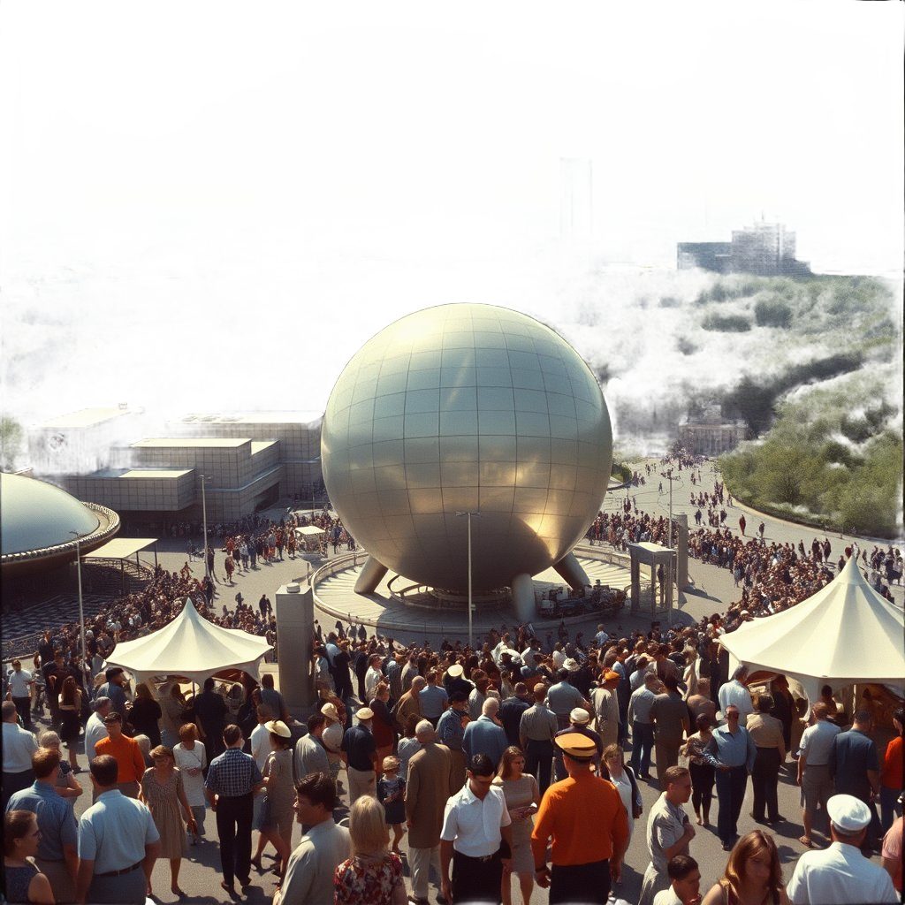
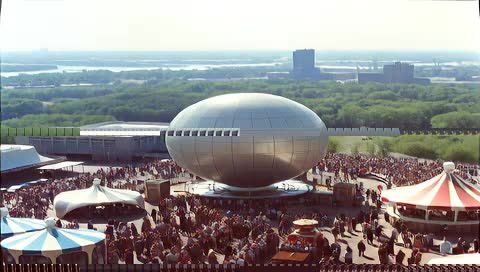

The 1964 World's Fair workflow
The worlds_fair_1964.json workflow ships as a built-in example. It
demonstrates a complete multi-step pipeline: algorithmic prompt generation, LLM
conditioning, image synthesis, and video generation — all chained together with
intermediate artifact handoff.
What it produces
A short video — 5 seconds at 24 fps — depicting a stylised scene from the 1964 New York World's Fair. The pipeline generates a landscape SVG as visual reference, conditions a video prompt from it, and submits the prompt to Wan2.2. The entire run takes approximately 12 minutes on a QB2 (P300x2) system.
Node graph — six nodes, left to right
Node colors: teal = input · gold = processing · green = model inference · pink = output/save

theme input wired from node 1's text output
"a large crowd of people walking around a large sphere"
Expands the seed phrase into a full video generation prompt

Produces an optional seed image for image-to-video. Skipped if T2V is selected.
Receives polished prompt from node 3. Seed image from node 4 is optional.
"a large crowd of people walking around a large sphere — 1964 World Fair, retro-futuristic, Kodachrome, cinematic, warm-toned, wide angle, late afternoon sun"
Writes to the history store with full node-graph provenance as metadata

User-facing parameters
The workflow exposes three parameters in zone 2 of the toolbar panel:
| Parameter | Type | Default | Effect |
|---|---|---|---|
| style_hint | string | "cinematic, warm-toned" | Injected into the PromptConditioner's style guidance at node 3 |
| palette | enum | golden | Controls the landscape SVG color palette at node 2. Options: golden, arctic, volcanic, midnight, toxic, neon |
| num_frames | integer (9–241, step 4) | 121 | Number of video frames passed to VideoGenNode. 121 frames is approximately 5 seconds at 24 fps. |
Running it from the terminal
# Run with default parameters
tt-ctl workflow run worlds_fair_1964
# Override palette and style hint
tt-ctl workflow run worlds_fair_1964 \
--param palette=volcanic \
--param style_hint="moody, low-contrast, fog"
# Validate the graph without running anything
tt-ctl workflow run worlds_fair_1964 --dry-run